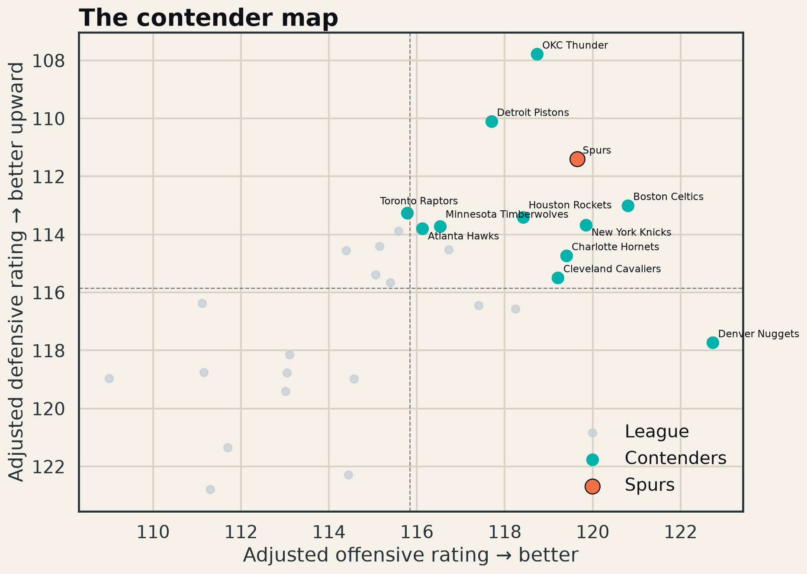

How large was the prior-year quality gap between San Antonio and the league’s best teams, and did it live more on offense or defense?
San Antonio finished 2025–26 No. 2 in adjusted margin at +8.24 points per 100 possessions, behind Oklahoma City Thunder (+10.94). The Spurs’ adjusted offense (119.65) and defense (111.40) put them in the true two-way contender quadrant.
That makes the 2026–27 question less about arriving early and more about closing the remaining gap against elite paths: Oklahoma City in the West and the New York/Boston/Cleveland group in the East.

Blend current-season rolling ratings with lineup availability and strength of schedule, then add opponent-style dimensions such as transition frequency and rim/three shot mix.